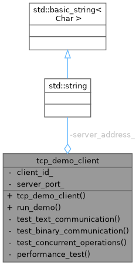
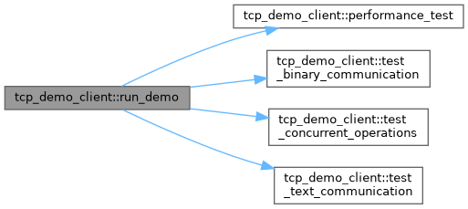
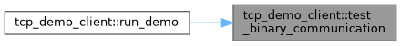
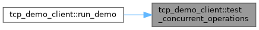
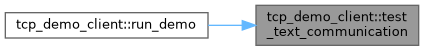

- Generated by
 1.12.0
1.12.0
|
Network System 0.1.1
High-performance modular networking library for scalable client-server applications
|

Public Member Functions | |
| tcp_demo_client (int client_id, const std::string &server_address, int server_port) | |
| void | run_demo () |
Private Member Functions | |
| void | test_text_communication (std::shared_ptr< tcp_client > client) |
| void | test_binary_communication (std::shared_ptr< tcp_client > client) |
| void | test_concurrent_operations (std::shared_ptr< tcp_client > client) |
| void | performance_test (std::shared_ptr< tcp_client > client) |
Private Attributes | |
| int | client_id_ |
| std::string | server_address_ |
| int | server_port_ |
Definition at line 98 of file tcp_server_client.cpp.
|
inline |
Definition at line 100 of file tcp_server_client.cpp.
|
inlineprivate |
Definition at line 240 of file tcp_server_client.cpp.
References client_id_.
Referenced by run_demo().
|
inline |
Definition at line 103 of file tcp_server_client.cpp.
References client_id_, performance_test(), server_address_, server_port_, test_binary_communication(), test_concurrent_operations(), and test_text_communication().

|
inlineprivate |
Definition at line 169 of file tcp_server_client.cpp.
References client_id_.
Referenced by run_demo().

|
inlineprivate |
Definition at line 205 of file tcp_server_client.cpp.
References client_id_, and kcenon::network::message.
Referenced by run_demo().

|
inlineprivate |
Definition at line 138 of file tcp_server_client.cpp.
References client_id_, and kcenon::network::message.
Referenced by run_demo().

|
private |
Definition at line 134 of file tcp_server_client.cpp.
Referenced by performance_test(), run_demo(), test_binary_communication(), test_concurrent_operations(), and test_text_communication().
|
private |
Definition at line 135 of file tcp_server_client.cpp.
Referenced by run_demo().
|
private |
Definition at line 136 of file tcp_server_client.cpp.
Referenced by run_demo().